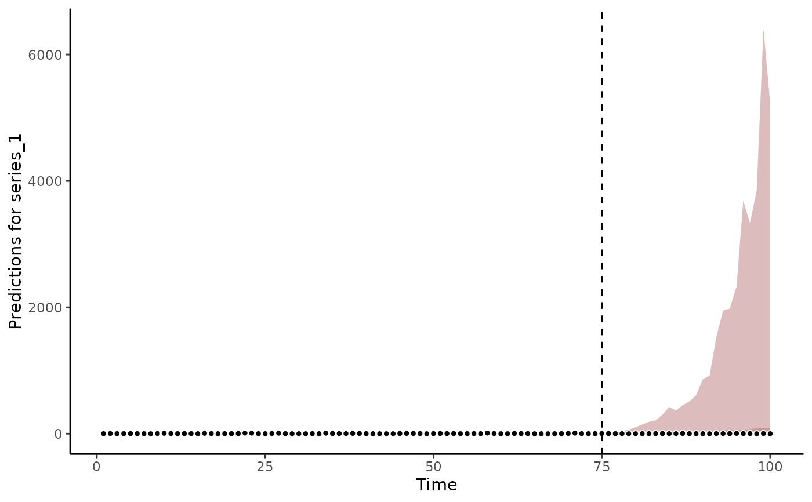
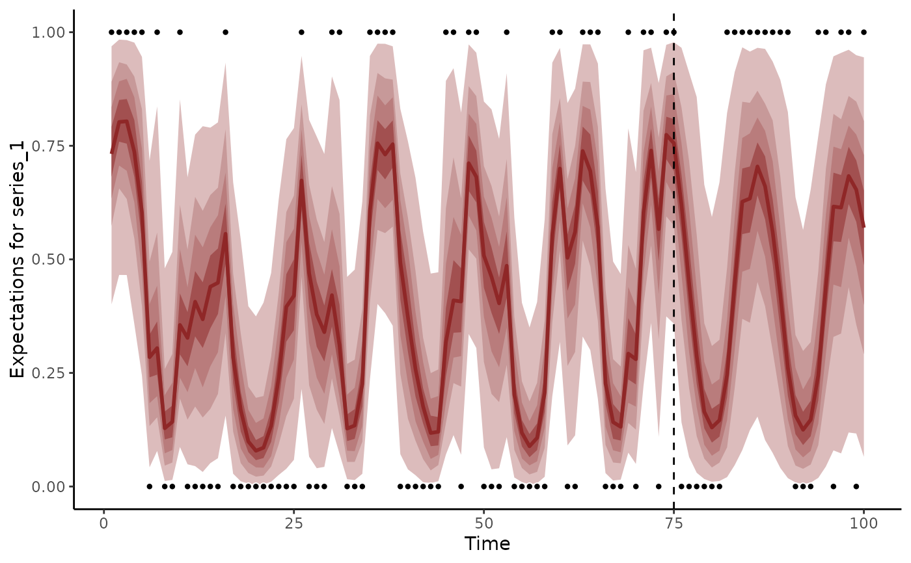

Compute probabilistic forecast scores for mvgam models
Source:R/score.mvgam_forecast.R
score.mvgam_forecast.RdCompute probabilistic forecast scores for mvgam models
Usage
# S3 method for mvgam_forecast
score(
object,
score = "crps",
log = FALSE,
weights,
interval_width = 0.9,
n_cores = 1,
...
)
score(object, ...)Arguments
- object
mvgam_forecastobject. Seeforecast.mvgam().- score
characterspecifying the type of proper scoring rule to use for evaluation. Options are:sis(i.e. the Scaled Interval Score),energy,variogram,elpd(i.e. the Expected log pointwise Predictive Density),drps(i.e. the Discrete Rank Probability Score),crps(the Continuous Rank Probability Score) orbrier(the latter of which is only applicable forbernoullimodels. Note that when choosingelpd, the supplied object must have forecasts on thelinkscale so that expectations can be calculated prior to scoring. If choosingbrier, the object must have forecasts on theexpectedscale (i.e. probability predictions). For all other scores, forecasts should be supplied on theresponsescale (i.e. posterior predictions)- log
logical. Should the forecasts and truths be logged prior to scoring? This is often appropriate for comparing performance of models when series vary in their observation ranges. Ignored ifscore = 'brier'- weights
optional
vectorof weights (wherelength(weights) == n_series) for weighting pairwise correlations when evaluating the variogram score for multivariate forecasts. Useful for down-weighting series that have larger magnitude observations or that are of less interest when forecasting. Ignored ifscore != 'variogram'- interval_width
proportional value on
[0.05,0.95]defining the forecast interval for calculating coverage and, ifscore = 'sis', for calculating the interval score. Ignored ifscore = 'brier'- n_cores
integerspecifying number of cores for calculating scores in parallel- ...
Ignored
Value
A list containing scores and interval coverages per
forecast horizon. If score %in% c('drps', 'crps', 'elpd', 'brier'),
the list will also contain return the sum of all series-level scores
per horizon. If score %in% c('energy','variogram'), no
series-level scores are computed and the only score returned will be
for all series. For all scores apart from elpd and brier, the
in_interval column in each series-level slot is a binary indicator of
whether or not the true value was within the forecast's corresponding
posterior empirical quantiles. Intervals are not calculated when using
elpd because forecasts will only contain the linear predictors
References
Gneiting, T. and Raftery, A. E. (2007). Strictly Proper Scoring Rules, Prediction, and Estimation. Journal of the American Statistical Association, 102(477), 359-378. doi:10.1198/016214506000001437
Examples
# \dontrun{
# Simulate observations for three count-valued time series
data <- sim_mvgam()
# Fit a dynamic model using 'newdata' to automatically produce forecasts
mod <- mvgam(
y ~ 1,
trend_model = RW(),
data = data$data_train,
newdata = data$data_test,
chains = 2,
silent = 2
)
# Extract forecasts into a 'mvgam_forecast' object
fc <- forecast(mod)
plot(fc)
#> Out of sample CRPS:
#> 977.664398999974

# Compute Discrete Rank Probability Scores and 0.90 interval coverages
fc_scores <- score(fc, score = 'drps')
str(fc_scores)
#> List of 4
#> $ series_1 :'data.frame': 25 obs. of 5 variables:
#> ..$ score : num [1:25] 0.868 1.237 1.52 2.374 3.007 ...
#> ..$ in_interval : num [1:25] 1 1 1 1 1 1 1 1 1 1 ...
#> ..$ interval_width: num [1:25] 0.9 0.9 0.9 0.9 0.9 0.9 0.9 0.9 0.9 0.9 ...
#> ..$ eval_horizon : int [1:25] 1 2 3 4 5 6 7 8 9 10 ...
#> ..$ score_type : chr [1:25] "drps" "drps" "drps" "drps" ...
#> $ series_2 :'data.frame': 25 obs. of 5 variables:
#> ..$ score : num [1:25] 0.241 0.218 0.521 0.495 0.497 ...
#> ..$ in_interval : num [1:25] 1 1 1 1 1 1 1 1 1 1 ...
#> ..$ interval_width: num [1:25] 0.9 0.9 0.9 0.9 0.9 0.9 0.9 0.9 0.9 0.9 ...
#> ..$ eval_horizon : int [1:25] 1 2 3 4 5 6 7 8 9 10 ...
#> ..$ score_type : chr [1:25] "drps" "drps" "drps" "drps" ...
#> $ series_3 :'data.frame': 25 obs. of 5 variables:
#> ..$ score : num [1:25] 0.403 0.207 0.438 0.469 0.458 ...
#> ..$ in_interval : num [1:25] 1 1 1 1 1 1 1 1 1 1 ...
#> ..$ interval_width: num [1:25] 0.9 0.9 0.9 0.9 0.9 0.9 0.9 0.9 0.9 0.9 ...
#> ..$ eval_horizon : int [1:25] 1 2 3 4 5 6 7 8 9 10 ...
#> ..$ score_type : chr [1:25] "drps" "drps" "drps" "drps" ...
#> $ all_series:'data.frame': 25 obs. of 3 variables:
#> ..$ score : num [1:25] 1.51 1.66 2.48 3.34 3.96 ...
#> ..$ eval_horizon: int [1:25] 1 2 3 4 5 6 7 8 9 10 ...
#> ..$ score_type : chr [1:25] "sum_drps" "sum_drps" "sum_drps" "sum_drps" ...
# An example using binary data
data <- sim_mvgam(family = bernoulli())
mod <- mvgam(
y ~ s(season, bs = 'cc', k = 6),
trend_model = AR(),
data = data$data_train,
newdata = data$data_test,
family = bernoulli(),
chains = 2,
silent = 2
)
# Extract forecasts on the expectation (probability) scale
fc <- forecast(mod, type = 'expected')
plot(fc)
#> Out of sample Brier:
#> 6.78596418285705

# Compute Brier scores
fc_scores <- score(fc, score = 'brier')
str(fc_scores)
#> List of 4
#> $ series_1 :'data.frame': 25 obs. of 5 variables:
#> ..$ score : num [1:25] 0.4181 0.2841 0.1781 0.096 0.0741 ...
#> ..$ in_interval : num [1:25] NA NA NA NA NA NA NA NA NA NA ...
#> ..$ interval_width: num [1:25] 0.9 0.9 0.9 0.9 0.9 0.9 0.9 0.9 0.9 0.9 ...
#> ..$ eval_horizon : int [1:25] 1 2 3 4 5 6 7 8 9 10 ...
#> ..$ score_type : chr [1:25] "brier" "brier" "brier" "brier" ...
#> $ series_2 :'data.frame': 25 obs. of 5 variables:
#> ..$ score : num [1:25] 0.1987 0.2175 0.5301 0.6816 0.0332 ...
#> ..$ in_interval : num [1:25] NA NA NA NA NA NA NA NA NA NA ...
#> ..$ interval_width: num [1:25] 0.9 0.9 0.9 0.9 0.9 0.9 0.9 0.9 0.9 0.9 ...
#> ..$ eval_horizon : int [1:25] 1 2 3 4 5 6 7 8 9 10 ...
#> ..$ score_type : chr [1:25] "brier" "brier" "brier" "brier" ...
#> $ series_3 :'data.frame': 25 obs. of 5 variables:
#> ..$ score : num [1:25] 0.199 0.3382 0.53 0.0394 0.0263 ...
#> ..$ in_interval : num [1:25] NA NA NA NA NA NA NA NA NA NA ...
#> ..$ interval_width: num [1:25] 0.9 0.9 0.9 0.9 0.9 0.9 0.9 0.9 0.9 0.9 ...
#> ..$ eval_horizon : int [1:25] 1 2 3 4 5 6 7 8 9 10 ...
#> ..$ score_type : chr [1:25] "brier" "brier" "brier" "brier" ...
#> $ all_series:'data.frame': 25 obs. of 3 variables:
#> ..$ score : num [1:25] 0.816 0.84 1.238 0.817 0.134 ...
#> ..$ eval_horizon: int [1:25] 1 2 3 4 5 6 7 8 9 10 ...
#> ..$ score_type : chr [1:25] "sum_brier" "sum_brier" "sum_brier" "sum_brier" ...
# }